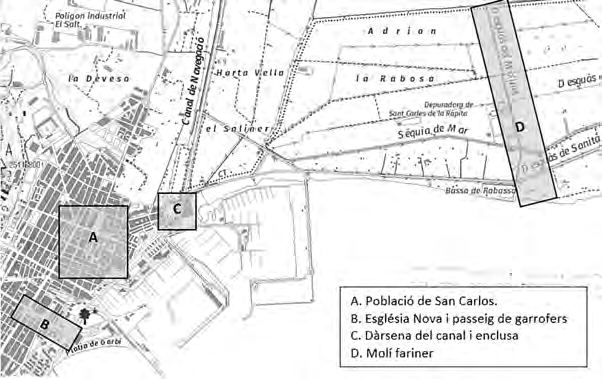

← Torna al pobleQUADERN DOCUMENTAL · 08/11/2026 · VERSIÓ 0.14.1
Edificis i aigua:
què s’ha corregit.
El problema era la col·locació d’alguns models d’assaig respecte del croquis actual. La revisió no aporta evidència per ampliar la terra o canviar la costa. Es conserven els contorns del mar i les dàrsenes, el canal i els molls.
| Element | Correcció | Font | Incertesa |
|---|
| forn-moli-guix | Recol·locat al nord de Fonda Vella en relació amb el seu emplaçament del croquis. | N112 p.211: afrontacions de 1782; p.224. | Relació nord documentada; separació de 3 m i punt individual C. |
|---|
| barraques-obrers | Dotze peces en dues fileres paral·leles a la riba occidental; abans algunes tallaven el llit. | N029, 13/11/1780: dotze barraques a les vores del canal. | Emplaçament, costat i separacions C; nombre de dotze conservat. |
|---|
| health | Centrada i alineada amb el moll existent; tota la planta queda recolzada. | N112 art.18 p.232: oficina al cap de la dàrsena. | Ajust de 0,21 m i gir d’assaig; planta i moll C. No es crea un illot. |
|---|
| molinet | Posició del braç nou retirada; es conserva l’expedient sense solar assignat. | N112 il·l.3, zona D, i p.223; art.30 p.234: extrem del canal vell a la platja del Molinet. | No s’ha georeferenciat el solar; no es trasllada arbitràriament a la riba del canal nou. |
|---|
El Molinet i el canal vell
La figura 3 de Reverté distingeix el sector D del molí fariner i el sector C de la dàrsena. L’article 30 de la relació de 1794 el situa al final del canal vell, al costat de la platja. La posició anterior al costat del braç nou no tenia aquesta correspondència: s’ha retirat del mapa i es conserva l’expedient, amb la ubicació exacta pendent.

N112 il·l.3. Base interpretativa de Reverté; no és un aixecament del 1794.Comprovació de totes les plantes
89 edificis i conjunts · 104 plantes · 17.587 mostres · cap planta sense terra o moll de suport a l’escena de 1800.
Es comproven perímetres i interiors, inclosa cada barraca. Un edifici sobre un moll real es distingeix d’un edifici suspès sobre el mar. La comprovació forma part de la compilació del projecte.
Pàgines de les fonts
Pilar Reverté Vidal, «1794. Estat de les obres reials de San Carlos», Recerca 20 (2024), pp.191–234. Les relacions documentals es distingeixen de les separacions, mesures i punts individuals d’assaig C.
Resultat complet de la comprovació · Registre de correccions · Revisió dels edificis